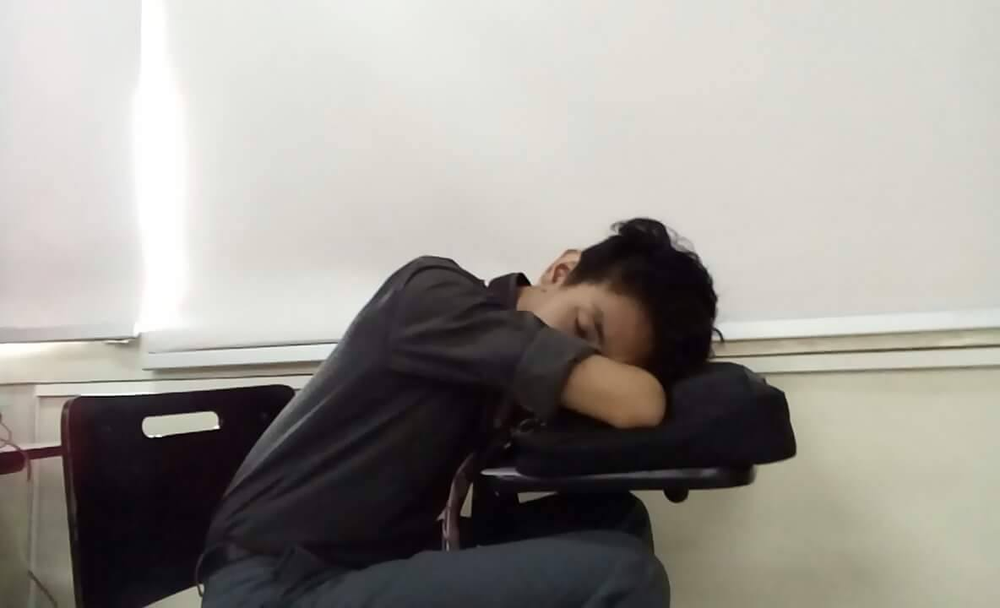
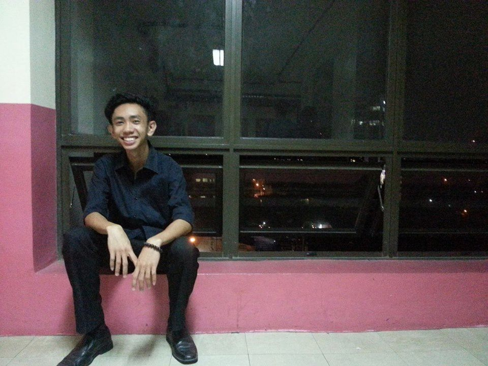

|
Stevenson Gallangi
HOME |
INTEREST |
GALLERY
|
|
Hobbies and Interest

I enjoy my free time by sleeping because it makes me calm and
it feels good to sleep as well as eating. I also like to read
novel books and teen fiction books and I’ve already read a lot
of books, book series, and even non-mainstream books.
I also enjoy watching anime because I learn a lot of new things
just like in reading. In anime, I also learn some Japanese words
which was nice and also in anime you can experience some things
you didn’t experienced yet. You can even learn some things in
here that you can actually use in the real life.

I can say that listening to music is a part of my life.
Songs from my favorite artists like, The Vamps, Maroon 5,
All Time Low, P!ATD, and a lot more. I’ll share something
on you. I like All Time Low and Maroon 5 because they try
creating new songs in a genre they didn’t use before and it
always comes out as good as if they we’re doing it a long time
ago. I was relieved when I heard and saw a new about the reunion
of the band My Chemical Romance and I am excited for their next
recordings this year.
So these are some of the things I enjoy a lot and also I like playing
games. I’m a big fan of pokemon, I’ve played almost all the version
of it even if I don’t even have a Gameboy or a DS thanks to smartphones.
|
Copyright ©StevensonGallangi
|